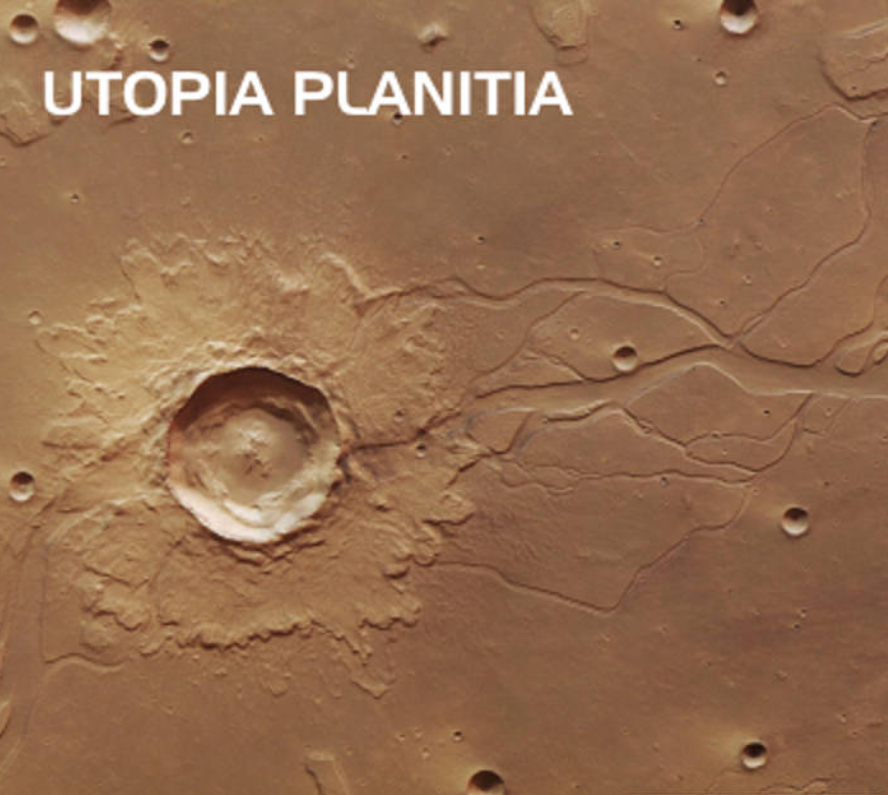

Contexto
El programa espacial de China tiene sus raíces en la era de Mao con la iniciativa "Dos Bombas, Un Satélite" y en el enfoque de autonomía estratégica durante la Guerra Fría. Los primeros proyectos en cohetería y tecnología satelital surgieron motivados por la seguridad nacional, la modernización industrial y el deseo de cerrar la brecha tecnológica con las grandes potencias. Con el tiempo, el esfuerzo se centralizó en un sistema estatal que coordinaba institutos de investigación, agencias militares, universidades y fábricas, una estructura que permitió a China llevar a cabo proyectos de largo plazo e integrados con alta continuidad.
Políticamente y organizativamente, el programa ha sido continuo: en lugar de fluctuar con los ciclos electorales o depender principalmente de capital privado, los objetivos espaciales chinos se han integrado en planes nacionales de varias décadas que conectan ciencia, industria y geopolítica. Esa continuidad ha permitido a China desarrollar capacidades de forma secuencial, desde lanzadores y satélites básicos hasta vuelos tripulados, estaciones espaciales autónomas y complejas misiones robóticas de retorno de muestras, priorizando la autosuficiencia nacional y un rendimiento científico sostenido.
Programa Dongfanghong

Antecedentes
El programa Dongfanghong produjo el primer satélite chino, Dongfanghong-1, lanzado el 24 de abril de 1970. El lanzamiento demostró la capacidad de China para construir y poner en órbita un satélite funcional de comunicaciones y tecnología, y simbolizó un avance importante en la ingeniería de cohetes y sistemas propios. El programa formaba parte de un esfuerzo más amplio (incluyendo trabajos previos con cohetes sonda) para dominar los vehículos de lanzamiento, la fabricación de satélites y la infraestructura terrestre necesaria para el acceso independiente al espacio.
Desarrollo
Tras ese éxito inicial, Dongfanghong evolucionó hacia una familia más amplia de plataformas satelitales y llevó a un crecimiento incremental de la capacidad industrial: lanzadores nacionales (familia Larga Marcha), instalaciones de fabricación de satélites e instituciones de operaciones de misión. Estos proyectos tempranos proporcionaron lecciones prácticas de ingeniería que hicieron posibles las misiones científicas posteriores: construyeron la fuerza laboral, las fábricas y el conocimiento institucional que sustentan las ambiciones espaciales actuales de China.
Resultados
El valor de Dongfanghong radica menos en ciencia de titular y más en la construcción de capacidad estatal. Mientras algunos países dependen de financiamiento intermitente o proveedores comerciales, China usó Dongfanghong para crear un ecosistema doméstico integrado.

Consecuencias
Esa inversión redujo barreras técnicas y organizativas para programas futuros: sin este enfoque temprano y deliberado en capacidades fundamentales, logros posteriores (vuelos tripulados, retorno de muestras lunares, estación modular) habrían sido mucho más difíciles de ejecutar. El programa ejemplifica cómo priorizar la infraestructura y el dominio de tecnologías básicas genera dividendos científicos a largo plazo.
Programa Shenzhou

Antecedentes
El programa Shenzhou es la serie de naves tripuladas de China; comenzó con vuelos de prueba no tripulados a fines de los años 90 y alcanzó su primer vuelo tripulado con Shenzhou-5 el 15 de octubre de 2003, cuando Yang Liwei se convirtió en el primer taikonauta chino. Las naves Shenzhou, lanzadas en variantes de cohetes Larga Marcha, son capaces de transporte orbital, acoplamiento y rotación de tripulación para Tiangong, formando la columna operacional de las ambiciones de China en vuelos espaciales tripulados.
Desarrollo
El progreso desde 2003 incluye misiones con múltiples personas, actividades extravehiculares y vuelos de larga duración que validan sistemas de soporte vital y salud de la tripulación.
Resultados
Las misiones Shenzhou están estrechamente integradas con las operaciones de la estación y los programas de entrenamiento de tripulación, proporcionando un programa humano estable que respalda experimentación científica y eleva la experiencia doméstica en sistemas de vuelos espaciales tripulados.

Consecuencias
El programa ha establecido las bases para la presencia humana continua de China en el espacio y ha demostrado la capacidad del país para mantener programas tripulados complejos de manera independiente.
Programa Tiangong

Antecedentes
Tiangong (literalmente "Palacio Celestial") es una estación espacial modular y tripulada permanentemente, desarrollada y operada por China. El módulo central, Tianhe, se lanzó en abril de 2021 y fue complementado por los módulos de laboratorio Wentian y Mengtian en 2022, completando una configuración de tres módulos capaz de albergar tripulaciones durante meses.
Desarrollo
Tiangong soporta experimentos en ciencias de la vida, investigación de materiales, física de fluidos y observación terrestre, funcionando como una plataforma nacional de presencia humana continua en órbita baja.

Resultados
El ritmo operativo ha sido constante: China realiza ahora rotaciones regulares de tripulación y misiones de larga duración, y el diseño de la estación permite cooperación internacional mediante cargas útiles pequeñas y asociaciones experimentales (dentro de los límites políticos).
Consecuencias
Tiangong también sirve como banco de pruebas técnico para tecnologías relevantes a misiones de espacio profundo: acoplamiento, soporte vital, ensamblaje en órbita y factores humanos a largo plazo.
Programa Chang'e

Antecedentes
El programa Chang’e es el eje central de los esfuerzos de China en exploración lunar. Comenzó con misiones de mapeo orbital: Chang’e-1 en 2007 y Chang’e-2 en 2010, que exploraron la Luna y probaron nuevas tecnologías espaciales. El programa avanza por etapas: orbitadores, módulos de aterrizaje con rovers, misiones de retorno de muestras y preparativos para posibles instalaciones lunares a largo plazo. Cada misión se apoya en la anterior, permitiendo a ingenieros y científicos perfeccionar técnicas de aterrizaje, movilidad y manipulación de muestras, mientras aumentan progresivamente la capacidad científica.
Desarrollo
El programa ha logrado hitos importantes. Chang’e-3 desplegó el rover Yutu y demostró que era posible realizar aterrizajes suaves y operaciones móviles en la superficie lunar. Chang’e-4 consiguió el primer aterrizaje suave en la cara oculta de la Luna en 2019, realizando estudios geológicos y mediciones in situ con el rover Yutu-2. Chang’e-5 devolvió a la Tierra aproximadamente 1,73 kg de basaltos lunares, llenando un vacío importante en el estudio del vulcanismo tardío de los mares lunares. El programa continúa ampliando nuestro conocimiento de la Luna, con muestras y observaciones que permiten mejorar los modelos sobre su evolución.
Resultados
Al estar liderado por el Estado, el programa puede coordinar recursos y planificar con visión a largo plazo de manera eficiente. Su avance por etapas reduce riesgos y permite misiones cada vez más complejas. Chang’e ha producido resultados científicos concretos, como nuevas muestras lunares, operaciones prolongadas en la superficie y observaciones de la cara oculta, que aportan al entendimiento global de la geología lunar. Cada misión suma conocimiento, creando una base sólida para la exploración sostenida de la Luna y ofreciendo datos valiosos para científicos de todo el mundo.

Consecuencias
El éxito del programa Chang’e se debe a una combinación de planificación estratégica, innovación tecnológica y colaboración internacional. Por ejemplo, la misión Chang’e-6, que en 2024 logró traer a la Tierra muestras del lado oculto de la Luna, colaboró con científicos de diversos países. Entre ellos, se encuentran investigadores de la Universidad de Brown y SUNY Stony Brook en Estados Unidos, así como de instituciones en Japón, Francia, Alemania, Reino Unido y Pakistán, quienes recibieron muestras para su análisis. Además, la misión Chang’e-5 permitió que científicos de Francia, Alemania, Japón, Pakistán, Reino Unido y Estados Unidos accedieran a muestras lunares para su investigación.
En términos de innovación tecnológica, la misión Chang’e-4, al ser la primera en aterrizar en la cara oculta de la Luna, llevó a cabo observaciones astronómicas de baja frecuencia en colaboración con el Instituto de Radioastronomía de los Países Bajos y el Instituto de Física de Plasma de Alemania.
Programa Tianwen

Antecedentes
El nombre Tianwen (天问, “Preguntas al cielo”) proviene de un poema clásico chino y fue elegido para englobar la ambición de China por explorar el Sistema Solar. En este contexto, China decidió lanzar su primera misión marciana independiente como parte de una estrategia de largo plazo para expandir sus capacidades interplanetarias. El proyecto se inició en un momento en que la exploración de Marte era dominada por Estados Unidos y algunas agencias europeas, lo que permitió a China fijar un objetivo ambicioso: orbitar, aterrizar y operar un rover en Marte en una sola misión.
Desarrollo
La misión Tianwen-1 fue lanzada el 23 de julio de 2020 mediante un cohete Larga Marcha-5 desde el centro de lanzamiento de Wenchang. Tras un viaje de varios cientos de millones de kilómetros, la nave entró en órbita marciana el 10 de febrero de 2021. Posteriormente, en mayo de 2021, el módulo de aterrizaje depositó el rover Zhurong en la región de Utopia Planitia, convirtiéndose en el primer rover chino en Marte. La misión integró tres partes: un orbitador que sirve de relé y estudio global de Marte, un módulo de aterrizaje, y el rover que recorrería la superficie. Los instrumentos cubrieron estudios de atmósfera, geología, superficie, y comunicación de datos hacia la Tierra.

Resultados
Tianwen-1 logró varios resultados operativos y científicos concretos: colocó un orbitador con instrumentos de teledetección, desplegó un rover solar (Zhurong) que realizó estudios de la superficie, y demostró la capacidad china de realizar la secuencia de inserción orbital, descenso controlado y operaciones en superficie en una sola campaña. Los datos obtenidos por el orbiter y el rover: imágenes, medidas meteorológicas, datos de radar y espectroscopía, ampliaron información sobre la geología y la historia del agua en la región de Utopia Planitia. Aunque el rover perdió contacto tras entrar en un hibernado en 2022–2023, la misión ya había cumplido objetivos clave y dejó una plataforma orbital funcional para observaciones continuadas.
Consecuencias
Tianwen ha significado varias cosas a la vez: consolidación tecnológica (dominio de entrada/descenso/aterrizaje en Marte), avance científico (nuevos datos sobre geomorfología y ambiente marciano) y capacidad para proyectos de mayor envergadura (retorno de muestras). Un factor clave del éxito ha sido la integración de capacidades: órbita + descenso + superficie, en una sola misión, lo que acelera la curva de aprendizaje y reduce la necesidad de misiones sucesivas para validar técnicas básicas.
Científicamente, el acceso a muestras y a observaciones coordinadas orbiter-rover abre la puerta a análisis de laboratorio que pueden reescribir hipótesis sobre la historia del agua en Marte y las condiciones previas a la vida
El programa espacial de China demuestra de manera contundente que la planificación estatal socialista, respaldada por una estrategia nacional coherente y sostenida, es capaz de alcanzar logros científicos y tecnológicos que el capitalismo, con su enfoque fragmentado y basado en ganancias, no puede igualar. Desde el lanzamiento del satélite Dong Fang Hong 1 en 1970 hasta las misiones Chang’e, Tianwen y Tiangong, China ha demostrado que una visión centralizada y orientada al bienestar colectivo puede superar las limitaciones impuestas por la lógica del mercado.
Si bien la participación del sector privado en el espacio chino existe, ha sido cuidadosamente gestionada. Aunque se ha permitido la inversión privada, el Estado mantiene un control regulatorio y financiero estricto, asegurando que las iniciativas comerciales estén alineadas con los intereses nacionales y no se desvíen hacia objetivos puramente lucrativos.
Además, la filosofía política china, basada en principios de desarrollo pacífico y cooperación internacional, ha guiado el programa espacial para que sirva no solo a los intereses nacionales, sino también al progreso global. La participación en proyectos como la Estación Internacional Lunar de Investigación, en colaboración con Rusia y otros países, demuestra un compromiso con la paz y la colaboración científica, contrastando con las políticas imperialistas de otras naciones que buscan militarizar el espacio y monopolizar sus recursos.
En un análisis final, el programa espacial de China ofrece una alternativa al modelo capitalista, demostrando que es posible lograr avances significativos en ciencia y tecnología mediante una planificación estatal consciente y orientada al bien común. Este enfoque no solo ha permitido a China alcanzar logros notables en el espacio, sino que también ofrece lecciones valiosas para otros países que buscan desarrollar sus capacidades científicas y tecnológicas de manera sostenible y equitativa.
Página principal